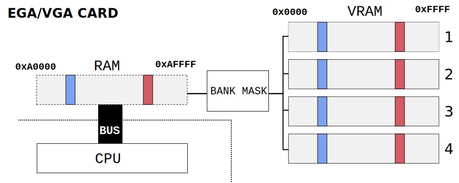

This article is part of a study about the ports of Another World. It is highly recommended to read Another World 101 before reading this.
THE IBM PC
For three decades, IBM had been comfortable dominating the mainframe market. When 1979 saw sales of micro-computers reach $150 million, the "Colossus of Armonk" decided to release one of its own. With several competitors such as Hewlett-Packard (HP), Texas Instruments (TI), Tandy, and Data General already established, IBM did things differently in order to stand out.
Instead of proceeding vertically as they had done by the past, with most components and software developed in-house, IBM built its micro-computer horizontally. They purchased elements such as the CPU from Intel and shipped with a PC DOS 1.0 operating system from Microsoft.
They took the approach even further by making available specs and schematics of the machine. For consumers used to wrestle with manufacturers for technical details, it was a whole new world.
The US$36 IBM PC Technical Reference Manual included complete circuit schematics, commented ROM BIOS source code, and other engineering and programming information for all of IBM's PC-related hardware, plus instructions on designing third-party peripherals.
- Wikipedia (IBM_Personal_Computer#History)
The first IBM Personal Computer was released on August 12, 1981 with the introduction of the 5150. It ran on an Intel 8088 (4.77MHz) with 16KiB RAM and an MDA graphic card which could only display text. It was a smashing success with 40,000 units ordered on the day of the announcement. For a while IBM remained the sole vendor of what was called "the PC".
When the popularity of IBM PCs crossed a threshold, the openness that had contributed to success became a liability. In March 1983 Compaq introduced an "IBM PC compatible" called the "Compaq Portable". Soon after the PC market was flooded with PC clones. IBM attempted to fork into a new standard using a copyrighted MCA bus. When this effort failed, IBM effectively lost control and quickly gained an overpriced reputation. The "overpriced" 1991 PS/1. Notice the huge Disney Sound Source extender.
Architecture
IBM's PCs were built around the concept of "big iron" with a monstrous CPU, a lot of RAM, and anything else a customer wanted to buy as an add-on card. In 1991 these add-on included the graphic card which could be anything from TGA, EGA, up to the latest VGA. The same went for the audio part with no less than four types of incompatible outputs (Beeper, AdLib, SoundBlaster, and Disney Sound Source).
To release a software for an "IBM PC or Compatible", developers could only display a list of "minimum requirements" and "recommended configuration" on the game box. The supported CPU, RAM, graphics adapter and audio cards were all listed there.
A "typical" 1991 PC would have been something based on an Intel 386 CPU running at 16Mhz with 2MiB of RAM and an AdLib audio card. Like in the Atari ST, there was a DMA controller which could not be used to Blit since it was dedicated to floppy/HDD data transfer.
Video Systems
From the first PC in 1981 to 1991, five major graphic standard were released. MDA and CGA were mostly extinct but there was still a large base of old TGA/EGA which had not upgraded yet to VGA.
Acronym Full Name Release Year
--------------------------------------------------------------
MDA Monochrome Display Adapter 1981
CGA Color Graphics Adapter 1981
TGA Tandy Graphics Adapter 1984
EGA Enhanced Graphics Adapter 1985
VGA Video Graphics Array 1987
The older generations TGA/EGA used an abysmal 2-bit channel (6 bits/color) color system.
2-bit per pixel color space of TGA/EGA
The latest VGA generation used a much more impressive 6-bit channel (18 bits/pixel) system.
The 18-bit color space of VGA
Configuring these cards was a mess of 300 registers all interacting together. Thankfully the PC BIOS provided a routine to configure everything. At the time, depending on the graphic card, 19 modes were available.
Mode Type Resolution Colors RAM/VRAM Mapping VRAM (KiB)
--------------------------------------------------------------------------------------
0h,1h MDA 360 x 400 16 B8000 16
2h,3h MDA 720 x 400 16 B8000 16
4h,5h CGA 320 x 200 4 B8000 16
6h CGA 640 x 200 2 B8000 16
7h MDA 720 x 400 2 B0000 16
8h TGA 160 x 200 B0000 64
9h TGA 320 x 200 16 B0000 64
Ah TGA 640 x 200 16 B0000 64
Bh --- --------- -- ----- --
Ch --- --------- -- ----- --
Dh EGA 320 x 200 16 A0000 128
Eh EGA 640 x 200 16 A0000 128
Fh EGA 640 x 350 2 A0000 128
10h EGA 640 x 350 16 A0000 128
11h VGA 640 x 480 2 A0000 256
12h VGA 640 x 480 16 A0000 256
13h VGA 320 x 200 256 A0000 256
Notice the three 320x200 modes with at least 16 colors which match Another World VM requirements. As we will see this is not quite what ended up being used.
Tandy Graphics Adapter
Surprisingly, the graphics mode labeled TGA were not introduced by Tandy Corporation but by IBM. When the big iron company released its 1984 "PCjr" aimed at the Apple II/Commodore 64 market they took the opportunity to improve on their aging CGA. Later that year, Tandy Corporation released the "Tandy 1000" at a lower cost with easier expandability, and wider PC compatibility. If at first Tandy "embraced" IBM's graphic sub-system, better sales enabled them to "improve"[1] and ultimately "extinguish" the PCjr name.
Each version of the MDA/CGA/EGA/VGA was backward compatible but the TGA has three exclusive modes named 8h, 9h, and Ah. The most interesting one for Another World is of course the 9h 320x200 16 colors. This mode was only available with a special 128 KiB VRAM (8x16KiB) extension since it is a "high bandwidth modes" requiring four-way interleaved memory[2].
The graphic layout of mode 9h is very much like the Atari ST we reviewed in the last article.
The framebuffers are hosted in RAM since these machines had no VRAM. Pixel are laid out linearly as nibbles (half-byte) encoding 4-bit color indexes[3].
Enhanced Graphics Adapter / Video Graphics Array
The EGA and VGA are very similar. They can both be setup to 320x200 in 16 colors mode via mode 9h. There is VRAM here which is accessed directly by the CPU via a 64 KiB memory mapped RAM window.
The framebuffer is organized like the Amiga we studied in the first article except that each bitplane is in a dedicated memory bank. There are four banks and. In mode 9h a bit from each four bank is combined into a nibble which result in a 4-bits color index.
VGA cards have a lot more VRAM (256KiB as 4x64KiB) than EGA cards (128KiB as 4x32KiB) which is irrelevant for Another World. VGA has deeper colors (6-bit/channel vs 2-bit/channel) which is very relevant.
 EGA/VGA 64 KiB memory mapping into VRAM banks
Deceivingly powerful
In terms of processing power a PC was far superior to the Amiga and Atari ST we visited last times. The problem for gaming was the video which was extremely slow.
The memory mapped system was never designed for animation. It was designed with spreadsheet and word processing in mind. Pushing all these pixels over the bus took a long time. Moreover, working with bitplane was cumbersome, especially without a co-processor like the Amiga's Blitter. Take the example of a simple routine to clear the screen in mode 9h.
charfar* VGA =( byte far*) 0xA0000000L ;#define SC_MAPMASK 0x02#define SC_INDEX 0x03c4#define SC_DATA 0x03c5void selectBank(uint_8 bank){
outp(SC_INDEX , SC_MAPMASK );
outp(SC_DATA ,1<< bank );}void ClearScreen(){for(int y =0; y <200; y ++){for(int x =0; x <160; x ++){
selectBank(x %4);
VGA[x + y *200]= 0;}}}
Even on the best PC of 1991 this code sample could not go past 5fps[4]. This is a pathologic example since the screen is cleared left to right. However even when clearing vertically to avoid bank switching, this code would still only run at 10fps[5].
void ClearScreen(){for(int x =0; x <160; x ++){
selectBank (x %4);for(int y =0; y <200; y ++){
VGA[x + y *200]= 0;}}}
The way most game worked around it was to avoid bank switching as much as possible. Wolfenstein 3D for example drew everything, from wall to sprites, including the HUD vertically for this very reason and even then only 72% of the screen was refreshed each frame to reach 11fps on a 386SX 16Mhz.
Another World on PC
With the limitations of the TGA/EGA/VGA in mind, porting Another World to PC looked like a daunting task. Not only you had to deal with the fragmentation, you also had to build an engine impossibly fast to met the requirements.
That challenge landed on Daniel Morais, then contracting at Delphine Software.
Eric Chahi mandated all ports to have a framerate consistent with the Atari and Amiga version. Even on a lightweight PC with a 286 CPU, the game had to be able to run at 24 frames per second.
- Daniel Morais
Solving Fragmentation
To deal with the fragmentation of the graphics and sound systems, Daniel wrote an abstraction layer based on function pointers.
It would have been so much easier to write the PC DOS port using C. But Eric had written both the Atari ST and Amiga version in 68000 asm. I took it as a dare and challenged myself to do the same. In the end, the VM was 100% written in x86 asm.
- Daniel Morais
There was no PnP in 1991. To configure the game, users had to run CONFIG.EXE, a text-based tool, to detail their peripherals.
Parameters are saved in file CONFIG.DAT. When ANOTHER.EXE starts up, it reads the file and assign the function pointers based on the graphics and sound cards to drive.
Running with TGA
On a TGA graphic card there was no choice. Mode 9h provided 320x200 with 16 6-bit colors. Converting the palettes from 4-bit colors to 2-bit color automatically with LSR resulted in color aliasing. The solution was to convert all palettes by hand.
The visual result is "special". Keep in mind that the issue at heart here is not the number of colors (TGA has 16) but the color depth.
The elevator (TGA/EGA)The office (TGA/EGA)The exploration (TGA/EGA)The encounter (TGA/EGA)The beast (TGA/EGA)
The result may not be to everybody's liking but i don't think much more could have been done with 6-bit colors. The data layout being similar to the Atari ST we just studied, TGA will not be discussed further.
Running with EGA
On an EGA graphic card the best mode to use was mode Dh. The same palettes designed for TGA are used since EGA color are also encoded on 6-bit. The rest works like the VGA.
Running with VGA
Things gets interesting on a VGA graphic card. At first sight it appeared mode 13h would have given the best visuals at the cost of wasting 4-bit per pixel. But Daniel found out that VGA card did not behave like EGA card in mode Dh. Palette upload did not expect 6-bit color but 18-bit color like in mode 13h. This allowed these cards to also run in mode Dh without wasting space but with the same visuals as the Amiga.
For this reason the game also shipped with the Amiga palettes (along with the TGA/EGA palettes). In this configuration, colors are up-sampled from 4-bit to 6-bit for each channel at runtime.
TLDR; TGA/EGA/VGA
The game shipped with two sets of palettes. One 6-bit/color set for the TGA/EGA and the Amiga set for the VGA. In TGA, the game uses mode 9h. In EGA/VGA, the game runs in mode Dh.
Solving DRAWN and FILL
Drawing polygons is done, like on the Atari ST, entirely in software. A simple double Bresenham algorithm generates horizontal lines start and end screen space coordinates. Next came the problem to fill these lines fast enough.
Luckily there was this fabulous computer book store in Paris called "Le monde en tique" with a supply of programming books you could not find anywhere else in France. I found one explaining in details the EGA/VGA latches and that helped a lot.
- Daniel Morais
The trick was to leverage the fact that polygons are made of a single color and play with the bank selection. Instead of writing in one bank after an other, the bank mask can be configured to write to all banks at the same time. Writing 1 byte in RAM writes 4 bytes in VRAM
Performances depends on alignment but in the best case this trick transform a 1 bytes write into a 4 bytes write. This resulted in eight consecutive horizontal pixels set with a single byte written.
I don't remember the exact figure but I remember drawing polygons was BLAZING FAST. With that 8x speed up, the framerate ended up well above the 24 fps goal we had set for ourselves.
- Daniel Morais
Solving COPY
The last piece of the puzzle was to find a way to execute the COPY FB opcode fast enough. Again, at first it looked like this was going to knee-cap the port. Since the framebuffer were written in VRAM thanks to the bank selector trick, the only way to copy was apparently to bring back the framebuffer from VRAM to RAM for storage and write it back to VRAM on demand.
The trick to solve this problem was widely documented by Michael Abrash in his article "Mode X Marks the Latch". Designers of the EGA/VGA were not complete sadists. To deal with bitplanes granularity and allow single bit to be plotted in bytes, each bank features a one byte latch. By "remembering" the last read byte, bit plotting is considerably facilitated.
The trick here is to re-purpose the latches. Instead of using them to plot a bit, there are used to read and write four bytes at a time. EGA/VGA Latches and Bit Mask
By choosing to store the BKGD in VRAM along with the double buffers the COPY FB opcode was implemented with a 4x speed up.
Surprisingly difficult audio
In this series, the audio part was not discussed much since it was a "solved problem" on most platforms. Apparently with the PC DOS port this assumption did not hold true.
The EGA/VGA part was not really complicated to write because it was mostly coding line filing of a single color or copying entire framebuffers from VRAM to VRAM. Once you knew how the EGA/VGA worked it was pretty easy.
Where it became difficult was when I coded the audio part. The Amiga music had been composed with a tool a la Sound Tracker with audio samples played on four channels. On Amiga and ST it was a piece of cake since these machines had everything needed. But on PC it was a whole different story. These machine had a default "buzzer" and the lucky ones had an AdLib capable of FM playback. None had PCM capability like the Sound Blaster and the Gravis UltraSound later provided.
To solve this issue, I had to modify the IRQ Timer (from 80 or 100 Hz to up to 8000Hz my memory is fuzzy about it). Which means the main program was interrupted 8,000 times per second to do something else. This something else absolutely had to be as short as possible otherwise the PC would crash. The goal was to make the PC Buzzer or AdLib vibrate at the desired frequency to simulated a PCM sample.
The result was far from the original but if you frown your ears you could kinda believe it. In any case it was better than no sound at all.
- Daniel Morais
Trivia: For the PC version, the distributor Interplay complained about the length of the game (which could be completed in a mere 20mn with some experience). To increase the duration, new levels were added to push the total from twelve to fifteen[6].
Verdict
Daniel delivered a splendid port to Delphine Software. Running in the same resolution as the Atari ST and the Amiga (320x200 and 16 colors) he even managed to lower the minimum configuration to a 286 10Mhz CPU with 640 KiB RAM on ANY TGA, EGA, or VGA graphic card[7].

 Surprisingly, the graphics mode labeled TGA were not introduced by Tandy Corporation but by IBM. When the big iron company released its 1984 "PCjr" aimed at the Apple II/Commodore 64 market they took the opportunity to improve on their aging CGA. Later that year, Tandy Corporation released the "Tandy 1000" at a lower cost with easier expandability, and wider PC compatibility. If at first Tandy "embraced" IBM's graphic sub-system, better sales enabled them to "improve"
Surprisingly, the graphics mode labeled TGA were not introduced by Tandy Corporation but by IBM. When the big iron company released its 1984 "PCjr" aimed at the Apple II/Commodore 64 market they took the opportunity to improve on their aging CGA. Later that year, Tandy Corporation released the "Tandy 1000" at a lower cost with easier expandability, and wider PC compatibility. If at first Tandy "embraced" IBM's graphic sub-system, better sales enabled them to "improve" The EGA and VGA are very similar. They can both be setup to 320x200 in 16 colors mode via mode 9h. There is VRAM here which is accessed directly by the CPU via a 64 KiB memory mapped RAM window.
The EGA and VGA are very similar. They can both be setup to 320x200 in 16 colors mode via mode 9h. There is VRAM here which is accessed directly by the CPU via a 64 KiB memory mapped RAM window.